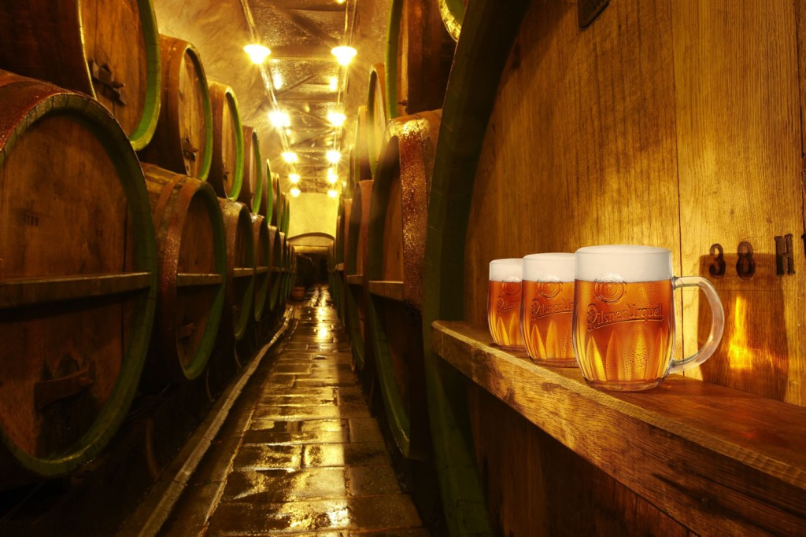
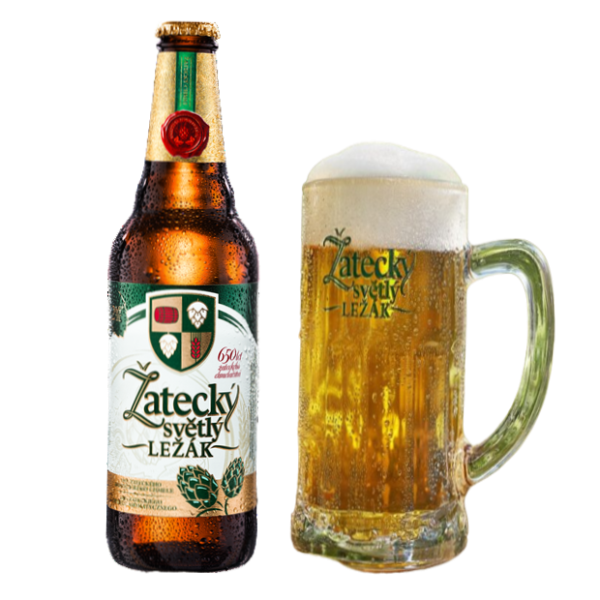

| Pilsner / Plzeňský Prazdroj |
Plzeň (Pilsen) |
1842 |
 |
| Světlý Ležák (Pale Lager) |
Varias localidades (estilo extendido) |
Siglo XIX (evolución de las lagers) |
 |
| Tmavý Ležák (Dark Lager) |
Varias localidades |
Tradicionalmente elaborada durante siglos |
 Vaso de cerveza de color marrón oscuro a negro con espuma beige. Vaso de cerveza de color marrón oscuro a negro con espuma beige. |
| Polotmavý Ležák (Amber Lager) |
Varias localidades |
Desarrollo posterior a las claras y oscuras |
Vaso de cerveza de color ámbar o cobrizo con espuma clara. |
| Výčepní (Tap Beer / Draught Beer) |
Todo el país (estilo base común) |
Tradicionalmente la cerveza de barril más común |
Vaso de cerveza pálida, a menudo menos lupulada que una Pilsner, servida directamente del barril. |
| Ležák Speciál (Special Lager) |
Varias cervecerías ofrecen sus propias versiones |
Variable (depende de la cervecería) |
Puede variar en color y presentación dependiendo de la especialidad (más fuerte, más lupulada, etc.). |
| Pšeničné Pivo (Wheat Beer) |
Menos común que las lagers, pero algunas cervecerías la producen |
Tradicionalmente elaborada en otras partes de Europa, adoptada en Chequia |
Vaso alto de cerveza turbia y pálida con espuma blanca y a menudo notas afrutadas o especiadas. |
| IPA (India Pale Ale) - Producción moderna |
Principalmente microcervecerías |
Siglo XXI (tendencia global) |
Vaso de cerveza de color dorado a ámbar, a menudo con una espuma generosa y aspecto lupulado. |